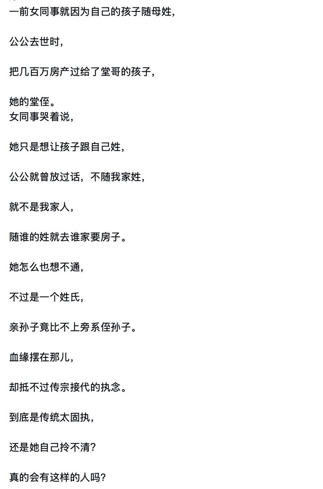
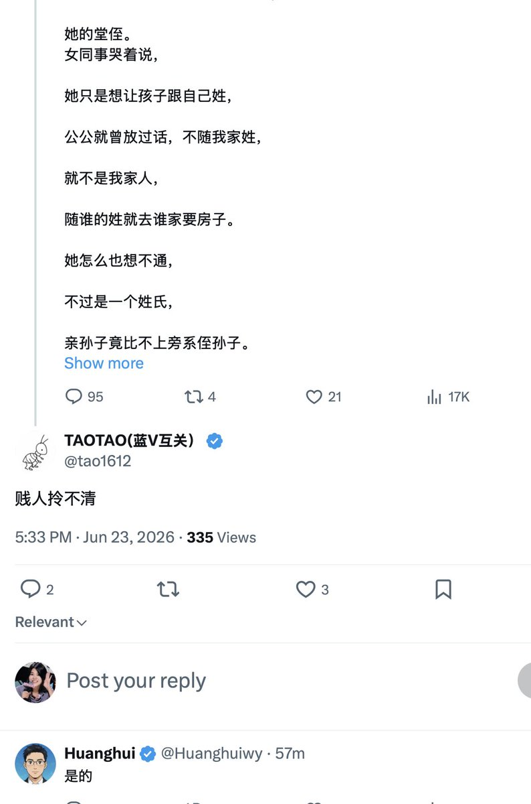

432InfantryRegiment
@432Ifantrygroup
@wodanggangqiang 本质上还是社会权力结构的一种体现，我小时候一直觉得我奶奶的名字很奇怪，后来长大了才知道是嫁给我爷爷了之后加了一个我爷爷的姓


我当刚强壮胆
@wodanggangqiang
这些人为了孩子跟男的姓，净说鬼话。
如果说孩子不跟男的姓，就没有亲情可言了，那女的就不应该结婚生孩子，去父留子不知道有多爽。
男的就抖那么两下，就拥有自己血脉的孩子，多么划算的生意。
男的为啥要结婚？因为掏不起代孕的钱，又想拥有自己血脉的孩子。 https://t.co/5KTyf0wnXH